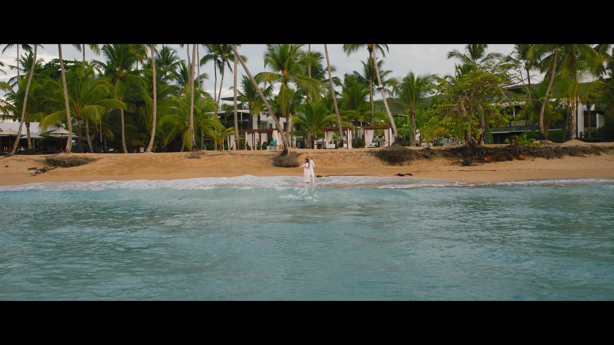
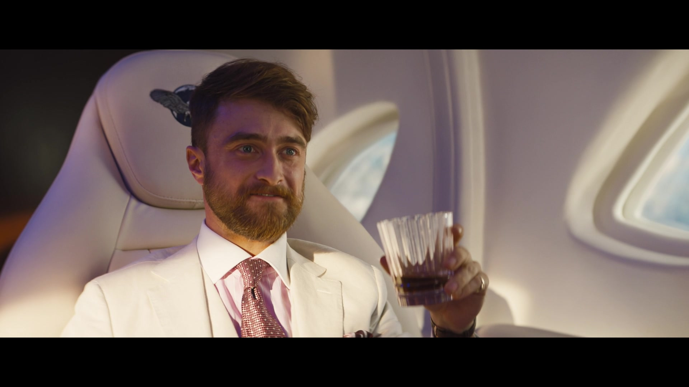
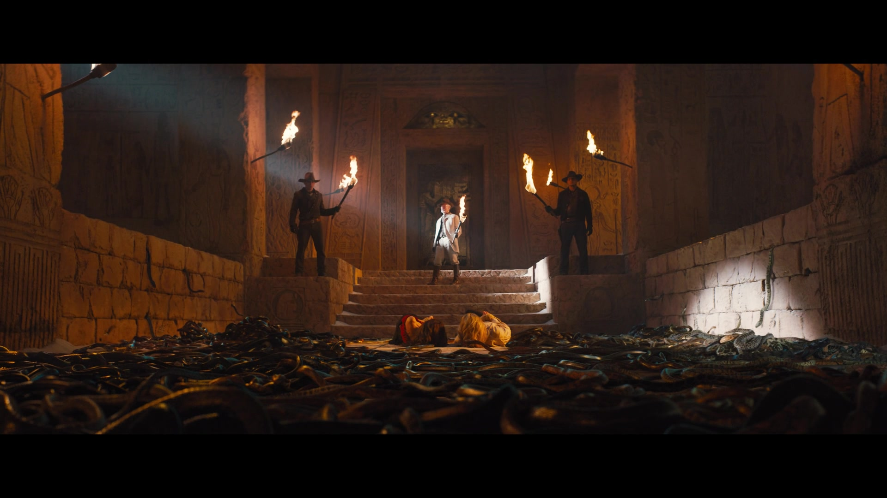

- Directed by Aaron Nee and Adam Nee
- Starring
- Sandra Bullock
- Channing Tatum
- Daniel Radcliffe
- Brad Pitt
Exploring and chasing in strange locales. What a lot of fun to find this film and enjoy it. I wasn’t expecting much, it looked like an old Saturday matinee flick, but surprise, surprise it’s a great romp and I loved it.
The premise is not unique, but the execution is spot on. Sandra Bullock is at her very best. She is an author of adventure romance novels and has a Getty Image model as her cover boy. He is played by Channing Tatum, who never has his tongue out of his cheek, and delivers in spades in every scene. However, he truly believes he is the hero from the novels.
 Filming this must have been hard work for everyone involved.Sandra [long may she reign] Bullock looks amazing and wears a claret/burgundy/crimson-spangled jump-suit throughout the movie. Unfortunately, or perhaps fortunately, it keeps getting smaller and smaller as she loses various parts throughout the course of the adventures. Channing Tatum remains in his best ‘Raiders’ costume throughout. There is a lovely scene where they sleep in a hammock together in the jungle. Channing does have a lot of trouble getting Sandra into the hammock beside him, providing more laughs.
Sandra has written of a lost city and a lost tomb and perhaps a lost treasure, and she has a scrap of a map on parchment, which may tell us the location. Channing thinks it would be a good idea, to go search for it, as does her publisher [a superb creation from Da Vine Joy Randolph], as she says ‘Good for sales’. And so, they set off on their adventures.
But wait a minute, there is a villain, who has heard of this expedition and wants the treasure for himself. The villain is played by little Daniel Radcliffe of little Harry Potter fame. And here is another big surprise, Radcliffe has all the comic abilities necessary for this role and he plays it to the hilt, he plays it like Kenneth Branagh on steroids.
 Daniel 'Kenneth' Radcliffe - you heard it here first!There are one-liners everywhere throughout the script and they are brilliant one-liners. I haven’t laughed so much in a cinema in a long time.
Then in the midst of it all, who should pop up in a fight sequence, to save the leads, but Brad Pitt, looking, I must say, as if he’d had a big night out before coming on set. He swashes his buckle through his one scene and then gets killed. Or does he?
 Some light CGI was used throughout...
Some light CGI was used throughout...
The adventures get madder and madder as they all traverse an ancient landscape and must weather all sort of disasters.
There is a superb cameo from Oscar Nunez, as a freight plane pilot, who has a pet goat on board, among other things. He transports Da Vine Joy, in her search for the missing stars. They make a wonderful comic couple.
The plot gets thicker and thicker and when they reach the ‘treasure’ they find that treasure can have another meaning.
 "Snakes?!? Why did it have to be snakes?!?" - Dr Jones (1981)Enough from me, I urge you to see it. There is an epilogue, which would suggest the directors have a sequel in mind, and lo and behold the missing Brad Pitt gives us a clue.
Certainly, I would pair Sandra Bullock and Channing Tatum together again immediately. This is her best pairing since she appeared with Matthew McConaughey in ‘A Time to Kill.’
I don’t know why, but watching Sandra and Channing throughout this film, I kept getting memories of Claudette Colbert and Clark Gable in ‘It Happened One Night.’
All in all, this is what cinema is supposed to be.
Star Rating: 4/5
ALERT! I’m going to the new ‘Top Gun’ film tomorrow night, and I DON’T want to go! I’ll let you know how I get on.